JEDEN ŚWIAT.
9 TRYBÓW GRY.
Wkrocz do magicznej sieci minigier. Buduj, rywalizuj, pokonuj areny i odkrywaj Crystal PvP — wszystko w charakterystycznym, fioletowym świecie MINEVORA.
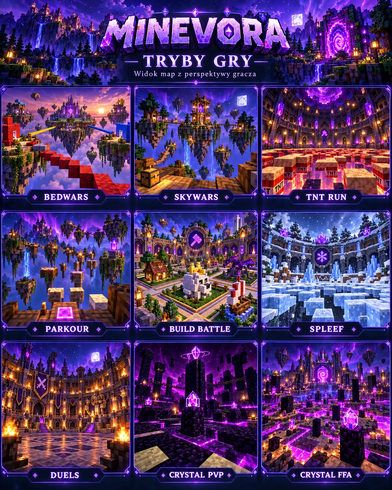
✦ WYBIERZ SWOJĄ PRZYGODĘ
9 TRYBÓW. NIESKOŃCZONE MOŻLIWOŚCI.
Od podniebnych bitew BedWars po emocjonujący Crystal PvP. Każda arena ma własny klimat.
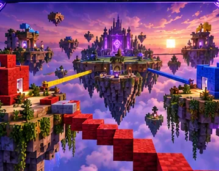
DRUŻYNOWEBedWars
Emerald Isles
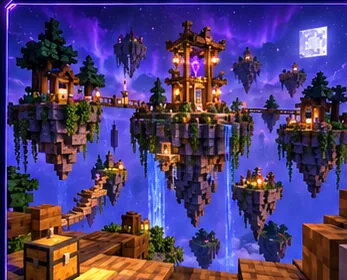
SURVIVAL PVPSkyWars
Cloudspire
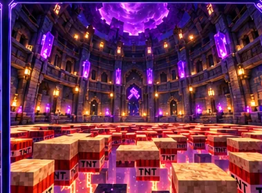
ZRĘCZNOŚĆTNT Run
Double Drop
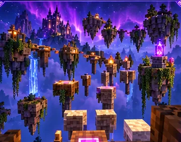
CZASParkour
Skytrail
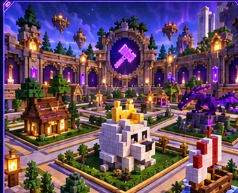
KREATYWNOŚĆBuild Battle
Studio
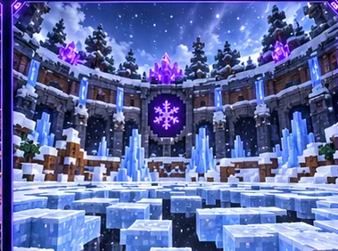
ELIMINACJESpleef
Frostfall
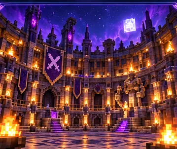
1 VS 1Duels
Colosseum
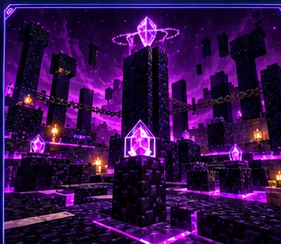
CRYSTALCrystal PvP 1v1
Obsidian Duel
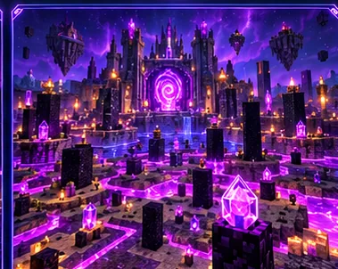
FREE FOR ALLCrystal PvP FFA
Nether Nexus
✦ ŚWIAT MINEVORA
MAPY STWORZONE DO GRY.
Dziewięć aren i centralne lobby. Wyspy, koloseum, lodowa podłoga i obsydianowe areny Crystal PvP — wszystkie przygotowane jako pliki schematów WorldEdit do testów na serwerze.
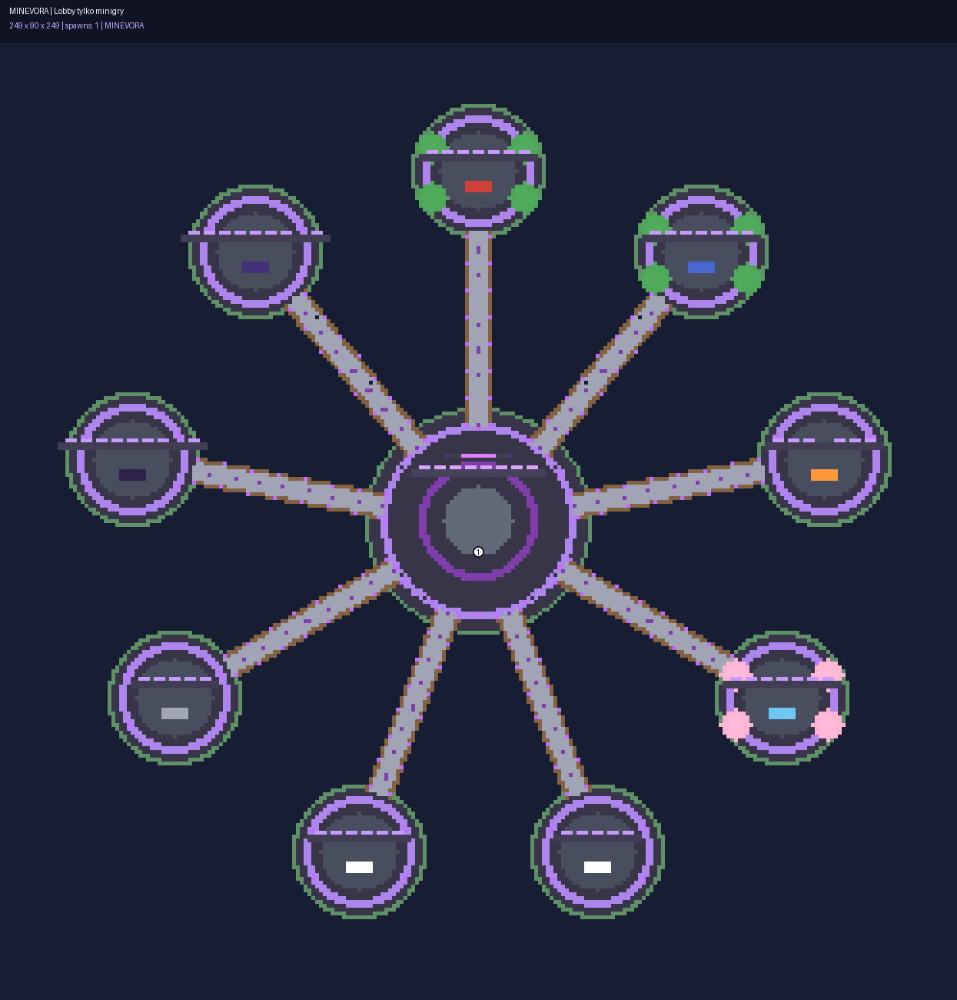
RZECZYWISTY RZUT MAPY .SCHEM✦ DOŁĄCZ DO NETWORK
TWÓJ NOWY ULUBIONY SERWER.
Budujemy połączenie launchera, lobby i dziewięciu trybów. Adres serwera pojawi się tutaj po uruchomieniu hostingu.
✦ WSZYSTKO W JEDNYM MIEJSCU
TWÓJ LAUNCHER. TWOJE ZASADY.
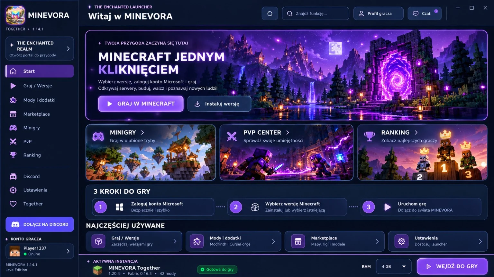
PODGLĄD GRAFICZNY INTERFEJSUMINECRAFT JEDNYM KLIKNIĘCIEM
Wybierz instalację Minecraft Java, odkrywaj dodatki, skiny i tryby PvP z jednego centrum. Połączenie wyboru minigry z serwerem będzie dostępne po wdrożeniu integracji.
Ranking graczy
Podgląd rankingów MINEVORA — dane demonstracyjne lub zaimportowane.
Otwórz ranking ↗♡MINEVORA Together
Funkcje społecznościowe i wspólne granie z przyjaciółmi.
Poznaj Together ↗✦Centrum pomocy
Instrukcje instalacji launchera, aktualizacji i konfiguracji.
Przejdź do poradnika ↗✦ GOTOWY NA PRZYGODĘ?
POBIERZ MINEVORA 12.2
Projekt launchera Minecraft Java na Windows oraz pakiet dziesięciu schematów do WorldEdit. Obie paczki są w wersji testowej, wymagają konfiguracji i nie są instalatorami EXE.
✦ PYTANIA
JAK TO DZIAŁA?
Czy serwer MINEVORA jest już online?
Nie. Serwer, połączenie Velocity i minigry są obecnie przygotowywane i testowane. Strona nie pokazuje fikcyjnego statusu online ani liczby graczy.
Czy mogę pobrać mapy?
Tak. Dostępny jest pakiet dziesięciu plików .schem — dziewięciu aren i lobby. Należy je zaimportować przez WorldEdit do świata Paper.
Czy mapy wyglądają identycznie jak rendery?
Nie. Renderowane obrazy pokazują zamierzony styl. Rzeczywiste mapy z plików .schem są budowlami z bloków Minecraft; ich wygląd możesz zobaczyć na stronie „Mapy 3D” w zakładce „Rzut .schem”.
Czy launcher instaluje się jak zwykły EXE?
Nie. Dostarczamy paczkę źródłową ZIP z plikami Pythona i skryptami Windows. Przed użyciem potrzebne są odpowiednie zależności; instrukcję znajdziesz w poradniku.